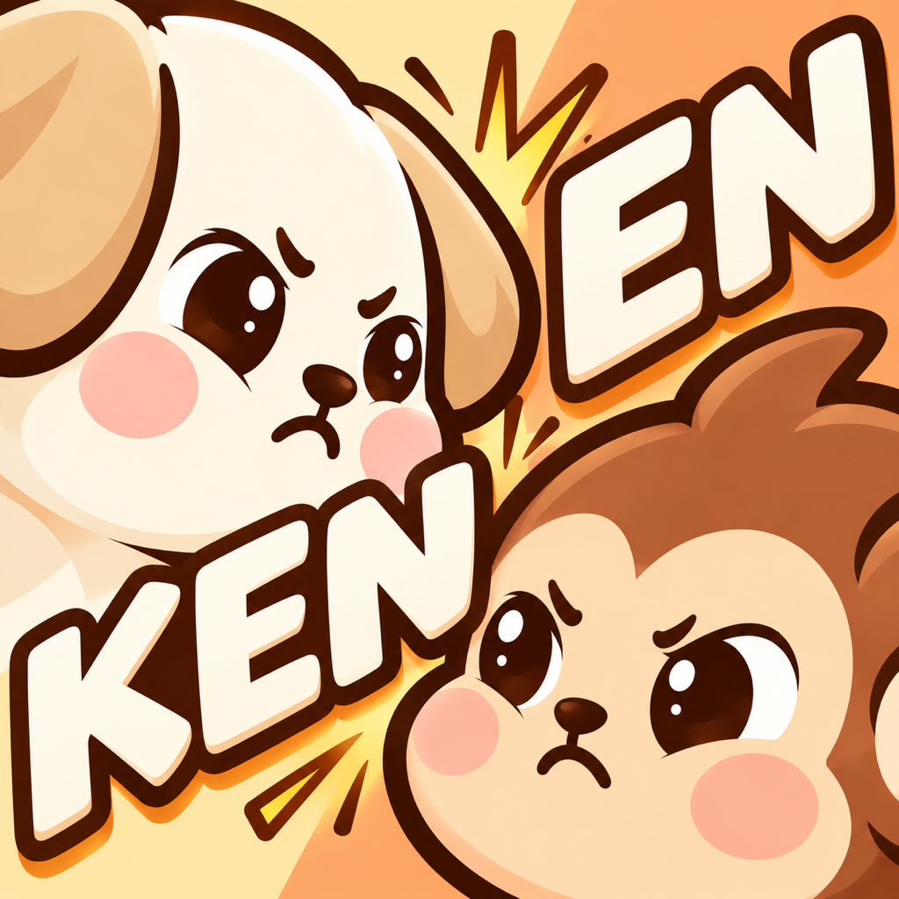

Animal Chain PuzzleKEN EN
Place a dog or monkey sign and guide everyone to their food.
Friends move closer. Rivals move away.
One move can set off a whole chain of reactions.
Play for free
Chapters 1–3 are free. Complete Chapter 1 to unlock the daily challenge. No account registration is required.
Chapter 4: All 50 Puzzles
Unlock Chapter 4 with a one-time in-app purchase. No subscription or automatic renewal. See the purchase screen for your local price.